GameCraft-Bench / Kimi
0%relative overall gain
20.06 → 24.45
Research project / 2026
Game-Evolver co-evolves the agent that builds a game and the harness that teaches it how to build better.
01 / Evidence
GameCraft-Bench / Kimi
0%relative overall gain
20.06 → 24.45
V-GameGym / GLM5.2
0%relative overall gain
37.60 → 48.45
VeriGame / GLM5.2
0 ptsoverall score lift
46.19 → 56.39
Reported overall scores from the Game-Evolver paper. Relative gains are calculated from the published baseline and evolved scores.
02 / The loop
The game orchestration agent edits a project, launches the runtime, probes meaningful states, and repairs what the player can actually see.
The harness proposal agent turns recurring failures into reusable guidance, then keeps, revises, merges, or retires those skills.
03 / Before & after
Richer visual and action design.
Cases from GameCraft-Bench (project repository).
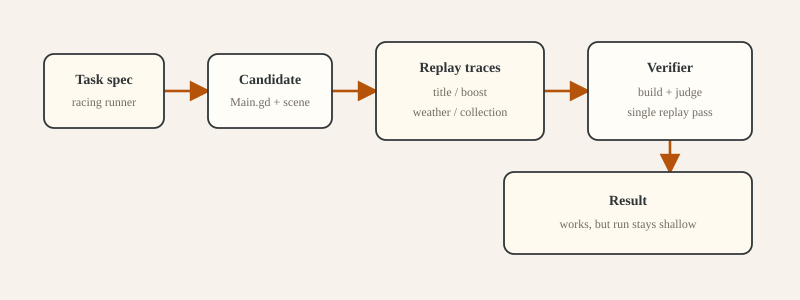
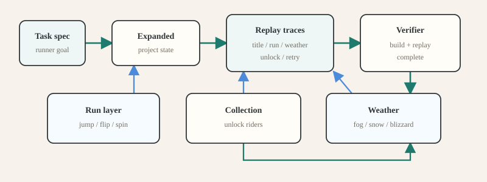
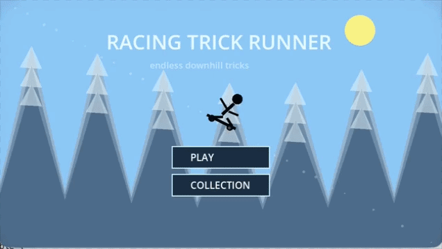
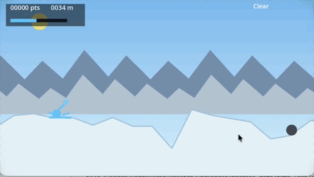
Cases from V-GameGym (project repository).
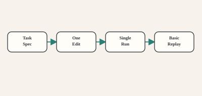
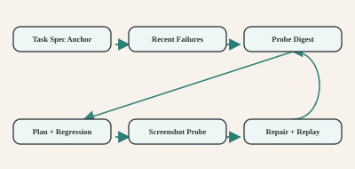
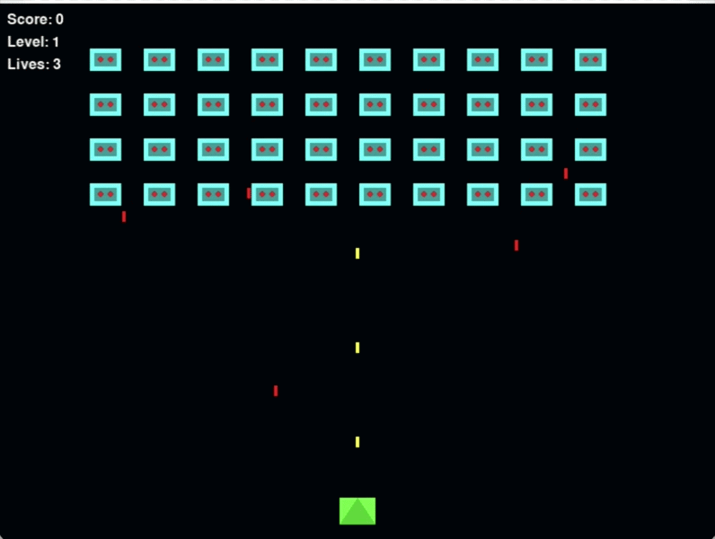
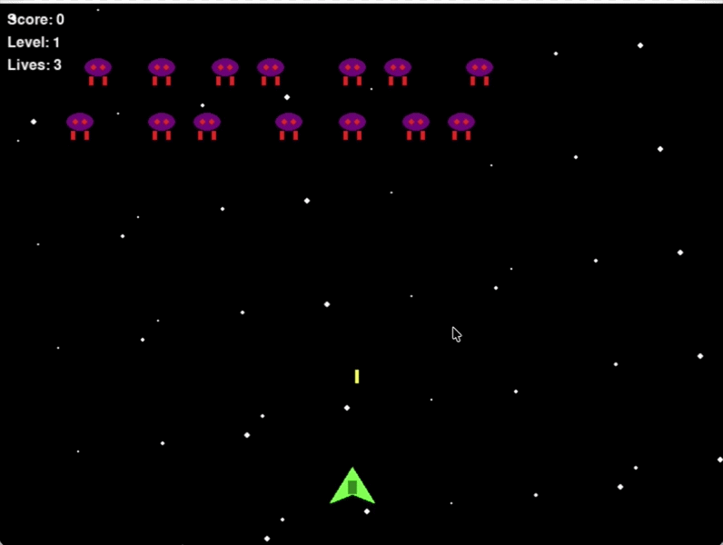
Better engineering development.
Cases from GameDevBench (project repository).
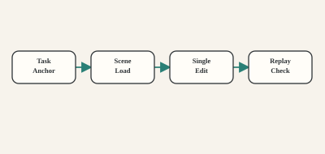
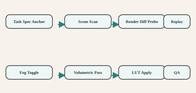
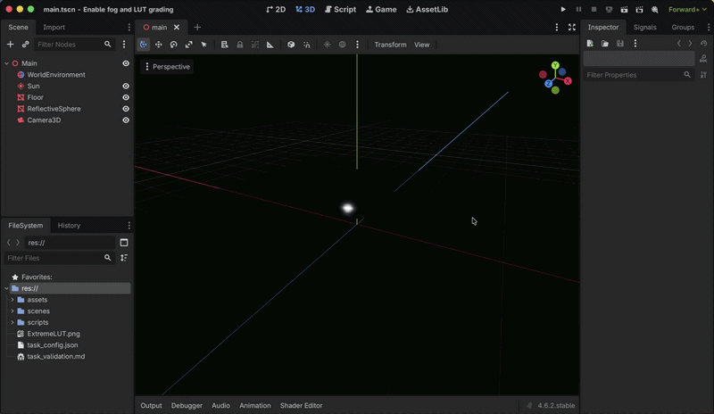
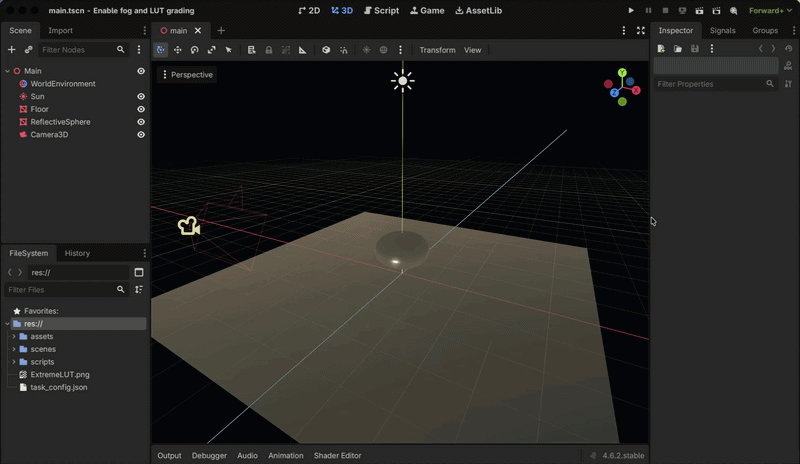
Richer narrative and character orchestration.
Case from Katawa Shoujo: Re-Engineered.
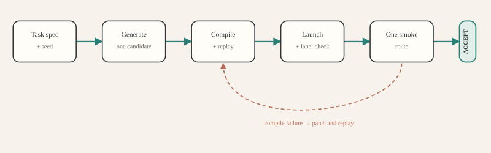
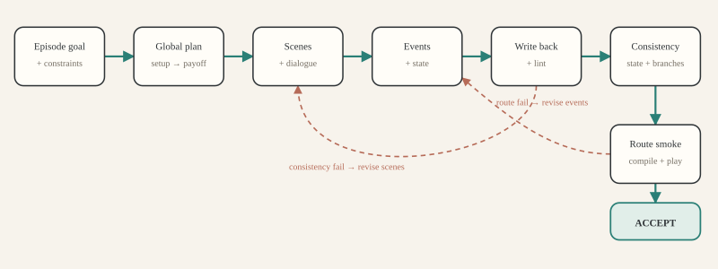
“
A game is not successful because its code compiles. It is successful when the intended experience survives contact with the runtime.
— Game-Evolver, research premise
04 / Read the work
Across four game benchmarks and six backbone models, Game-Evolver improves every baseline. The framework also transfers to Terminal-Bench and τ2-Bench, where execution feedback exposes the same gap between intention and outcome.
Open the full paper